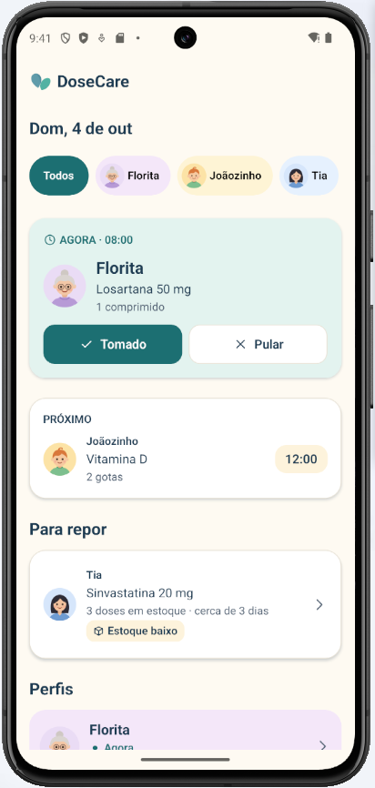
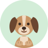
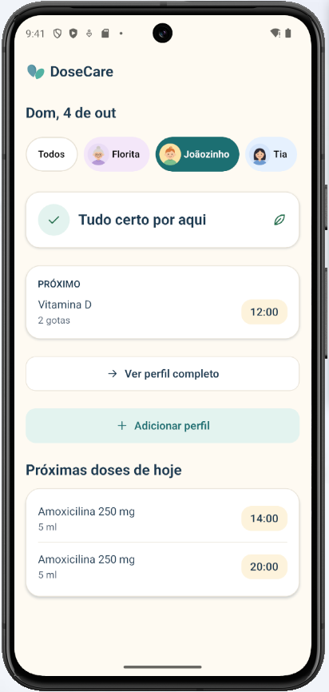
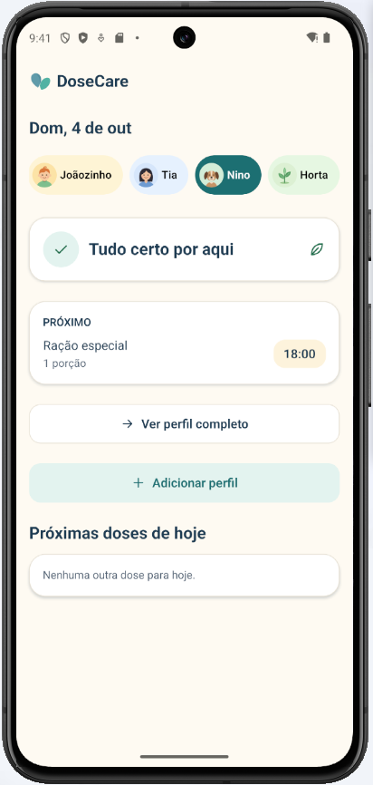
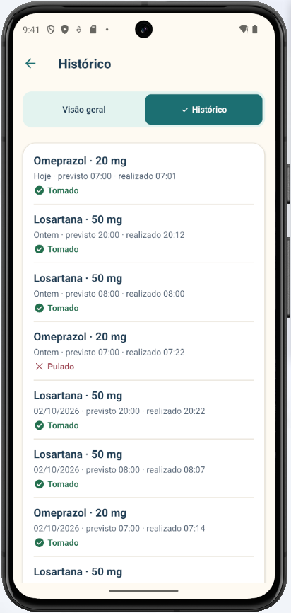
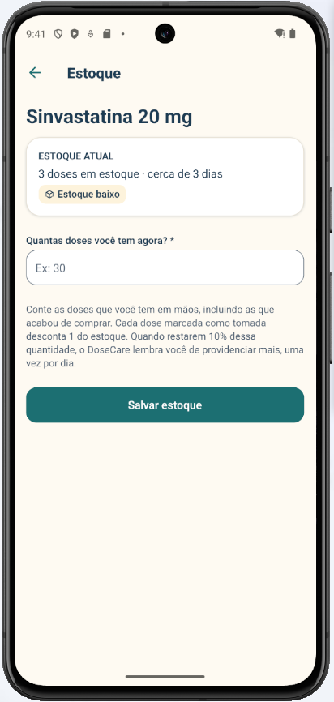

Organize remédios e cuidados de quem você ama: filhos, pais, avós, pets e até as plantas. O DoseCare mostra o que precisa de atenção agora e lembra você no horário, sem cobrança.


Esquecer uma dose não é um fracasso. O DoseCare foi feito para trazer tranquilidade a quem cuida, com linguagem acolhedora e sem alarmes exagerados.
Cada perfil tem sua própria rotina, seus medicamentos e seu histórico.
Antibióticos, vitaminas e tratamentos com data para acabar.
Remédios de uso contínuo, com controle de estoque.
Vários horários por dia, sempre com o que tomar agora.
Vermífugos, antipulgas e alimentação especial.
Rega, adubação e cuidados periódicos.
Sem criar conta, sem configurar nada complicado.
Escolha o tipo de perfil, um nome e um avatar. Pode ser você, seu filho, sua mãe, seu cachorro ou a sua horta.
Nome, dose, horários e duração do tratamento: contínuo, até uma data ou por quantidade de doses.
No horário, o DoseCare avisa. Marque como tomado ou pulado e o histórico se organiza sozinho.
Em poucos segundos você sabe quem precisa de cuidado, o que fazer e o que vem depois.
A dose que precisa de atenção fica em destaque, e a seguinte logo abaixo, mesmo que seja amanhã.
Notificações chegam mesmo com o app fechado e sem internet. Um toque abre o perfil certo.
Cada dose tomada desconta do estoque. Quando restarem 10%, o app lembra você de comprar mais.
Horário previsto e realizado de cada dose. Editar uma rotina nunca apaga o passado.
Veja todos de uma vez ou filtre por pessoa, pet ou planta com um toque.
Contraste alto, textos claros, botões grandes e suporte a leitores de tela. Status nunca só por cor.




O DoseCare guarda tudo no próprio celular. Não há conta, servidor ou anúncios, e nada é enviado para a internet.
Abra e comece a usar. Nenhum e-mail ou senha.
Lembretes e registros funcionam sem internet.
Excluir um perfil preserva o histórico de cuidados.
Todo o código pode ser consultado no GitHub.
Sim. É gratuito, sem anúncios e sem assinatura.
Não. Os lembretes são programados no próprio celular e chegam mesmo com o app fechado.
Por enquanto, o DoseCare está disponível para Android 7.0 ou mais recente.
Sem problema. Ela continua em "Agora" até você marcar como tomada ou pulada, sem mensagens de culpa.
Pode. Cadastre quantos perfis quiser e veja todos os cuidados juntos na tela inicial.
Baixe o DoseCare e organize a rotina de cuidados da sua casa hoje mesmo.
Versão 1.2.0 · Android 7.0 ou mais recente · Gratuito